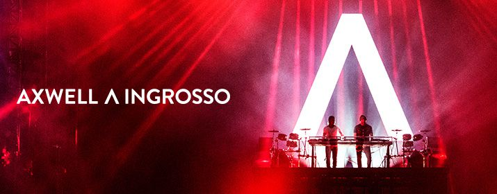

Axwell und Ingrosso sind ein schwedisches EDM-Duo,
welches der Swedish House Mafia entstammt. 2014 gaben Axwell^Ingrosso ihre
Debüt-Performance beim Governors Ball Music Festival in New York City.
Axwell und Ingrosso löschten ihre persönlichen Facebook Seiten und kreierten
eine gemeinsame Seite, um ihre neue Partnerschaft zu unterstreichen. Durch ihre
Zusammenarbeit als Axwell^Ingrosso entstanden bereits die Tracks We Come We Rave We
Love, On My Way und Can't Hold Us Down, sowie Something New. Bei ihren Produktionen
bewahren Axwell^Ingrosso den Geist der Swedish House Mafia.